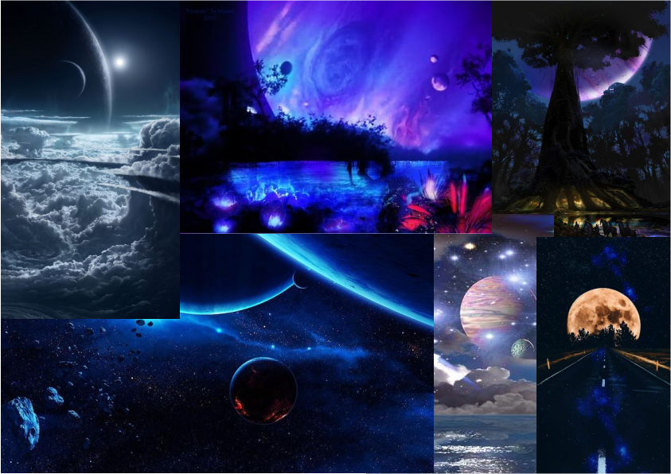

The demo is a user-perspective journey on exploring the web space.
From the Taoist classic Tao Te Ching, it was held that "The Tao produced One; One produced Two; Two produced Three; Three produced All things (一生二，二生三，三生万物). The first Pure One is universal or heavenly chi. The second Pure One is human plane chi, and the third Pure One is earth chi. Heavenly chi includes the chi or energy of all the planets, stars and constellations as well as the energy of God (the force of creation and universal love). Human plane chi is the energy that exists on the surface of our planet and sustains human life, and the earth force includes all of the forces inside the planet as well as the five elemental forces.
In this virtual web space, the designer is trying to answer the question "what is beyond" by imagining the existence of "the one" mentioned from the Tao Te Ching. The intention was to create something beyond recognition, from real-world objects to theoretical stuff, then to the final imaginary part. In conclusion, the theme for the imaginary space is to explore what’s behind the ultimate.
Since it is an imaginary space, most of my inspirations come from the term "surreal", including some imaginary photos of other planets and the movie Avatar, which inspires me a lot on constructing planets, oceans in my web space.
There are two types of textures, one is image, the other is p5.js-generated visual. By using the generation, the texture can be dynamic and with a beautifulness from computer graphics.
The enhancements will focus on performance issues around the web space - the capacity of the web space limits the performance of many visuals, compared to the particle effects/VFX of the game engine. Object mapping and movement will be optimized to improve visuals and immersion with reasonable frame rates.